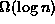
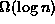

Data Structures and Algorithms
with Object-Oriented Design Patterns in C++
Data Structures and Algorithms
with Object-Oriented Design Patterns in C++In this section we consider an extremely important and useful category of tree structure--binary trees . A binary tree is an N-ary tree for which N is two. Since a binary tree is an N-ary tree, all of the results derived in the preceding section apply to binary trees. However, binary trees have some interesting characteristics that arise from the restriction that N is two. E.g., there is an interesting relationship between binary trees and the binary number system. Binary trees are also very useful for the representation of mathematical expressions involving the binary operations such as addition and multiplication.
Binary trees are defined as follows:
Definition (Binary Tree) A binary tree T is a finite set of nodes with the following properties:The tree
- Either the set is empty,
; or
- The set consists of a root, r, and exactly two distinct binary trees
and
,
.
Binary trees are almost always considered to be
ordered trees .
Therefore, the two subtrees  and
and  are called the
left and right subtrees, respectively.
Consider the two binary trees shown in Figure
are called the
left and right subtrees, respectively.
Consider the two binary trees shown in Figure  .
Both trees have a root with a single non-empty subtree.
However, in one case it is the left subtree which is non-empty;
in the other case it is the right subtree that is non-empty.
Since the order of the subtrees matters,
the two binary trees shown in Figure are different.
.
Both trees have a root with a single non-empty subtree.
However, in one case it is the left subtree which is non-empty;
in the other case it is the right subtree that is non-empty.
Since the order of the subtrees matters,
the two binary trees shown in Figure are different.

Figure: Two Distinct Binary Trees
We can determine some of the characteristics of binary trees
from the theorems given in the preceding section by letting N=2.
E.g., Theorem tells us that
an binary tree with  internal nodes contains n+1 external nodes.
This result is true regardless of the shape of the tree.
Consequently, we expect that the storage overhead of associated
with the empty trees will be O(n).
internal nodes contains n+1 external nodes.
This result is true regardless of the shape of the tree.
Consequently, we expect that the storage overhead of associated
with the empty trees will be O(n).
From Theorem we learn that
a binary tree of height  has at most
has at most  internal nodes.
Conversely, the height of a binary tree with n internal nodes
is at least
internal nodes.
Conversely, the height of a binary tree with n internal nodes
is at least  .
I.e., the height of a binary tree with n nodes is .
.
I.e., the height of a binary tree with n nodes is .
Finally, according to Theorem ,
a binary tree of height  has at most
has at most  leaves.
Conversely, the height of a binary tree with l leaves
is at least
leaves.
Conversely, the height of a binary tree with l leaves
is at least  .
Thus, the height of a binary tree with l leaves is
.
Thus, the height of a binary tree with l leaves is 
 Copyright © 1997 by Bruno R. Preiss, P.Eng. All rights reserved.
Copyright © 1997 by Bruno R. Preiss, P.Eng. All rights reserved.